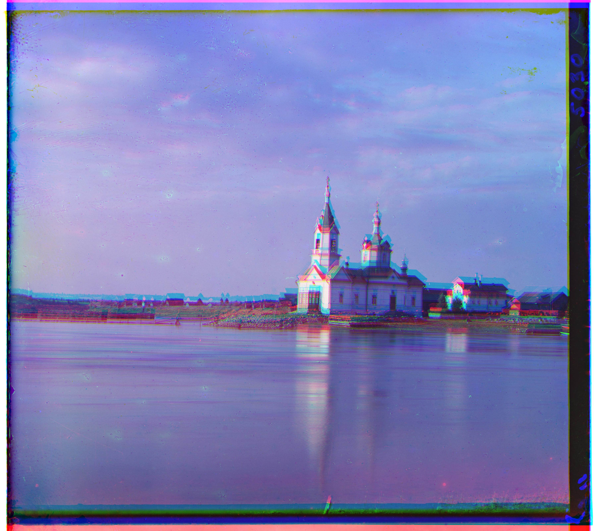
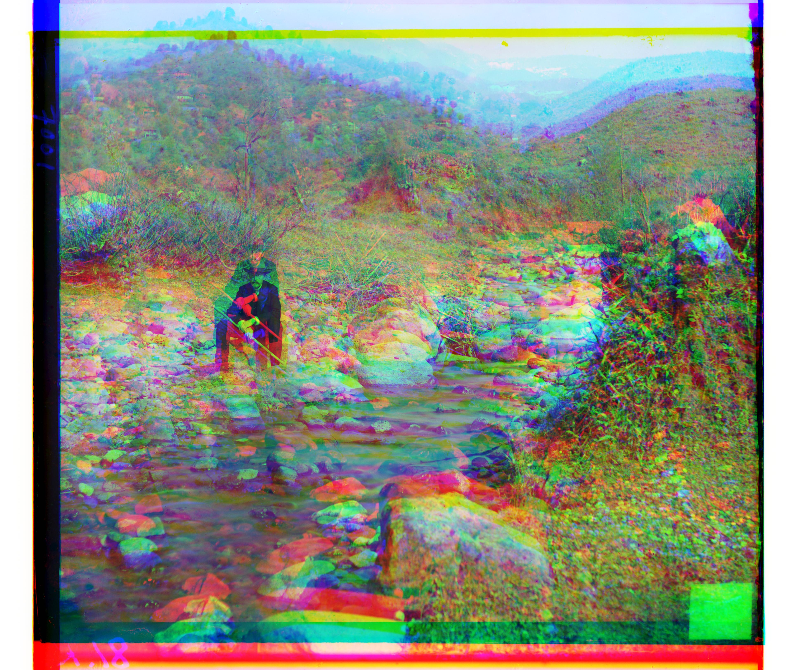
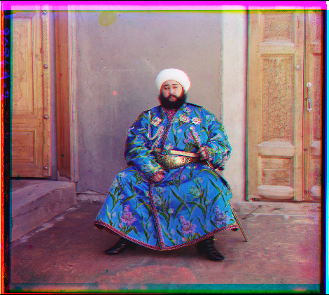
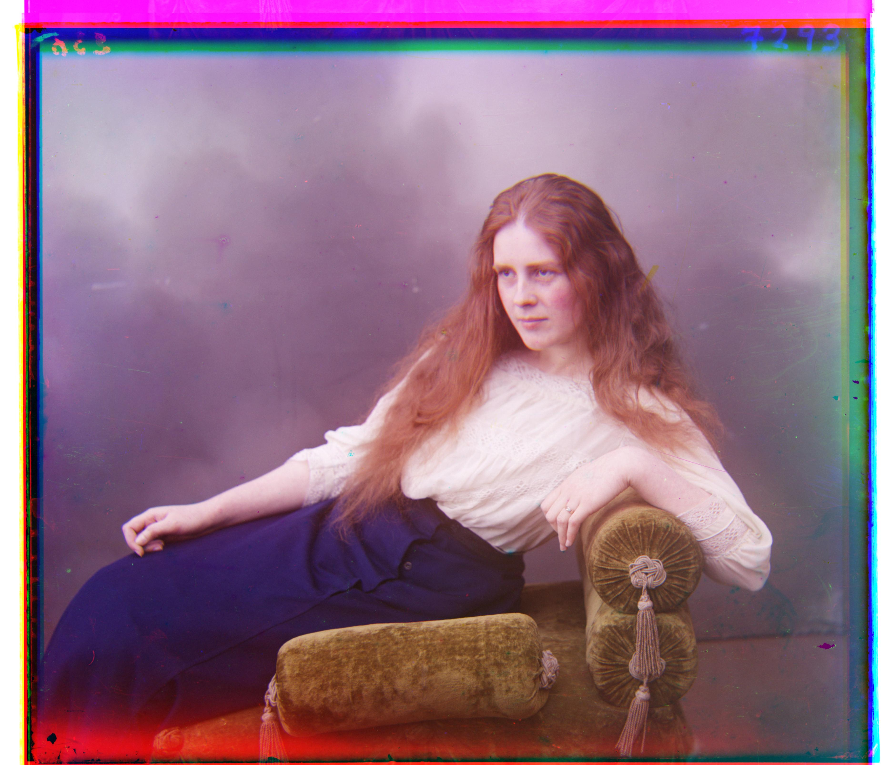
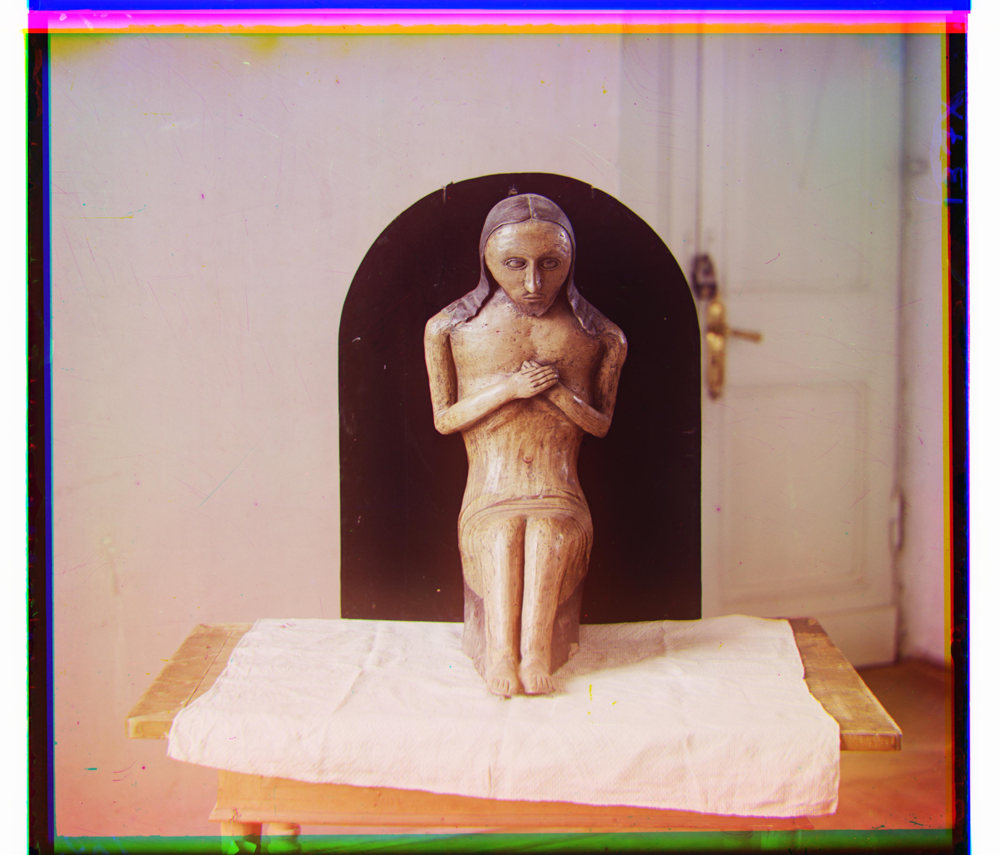
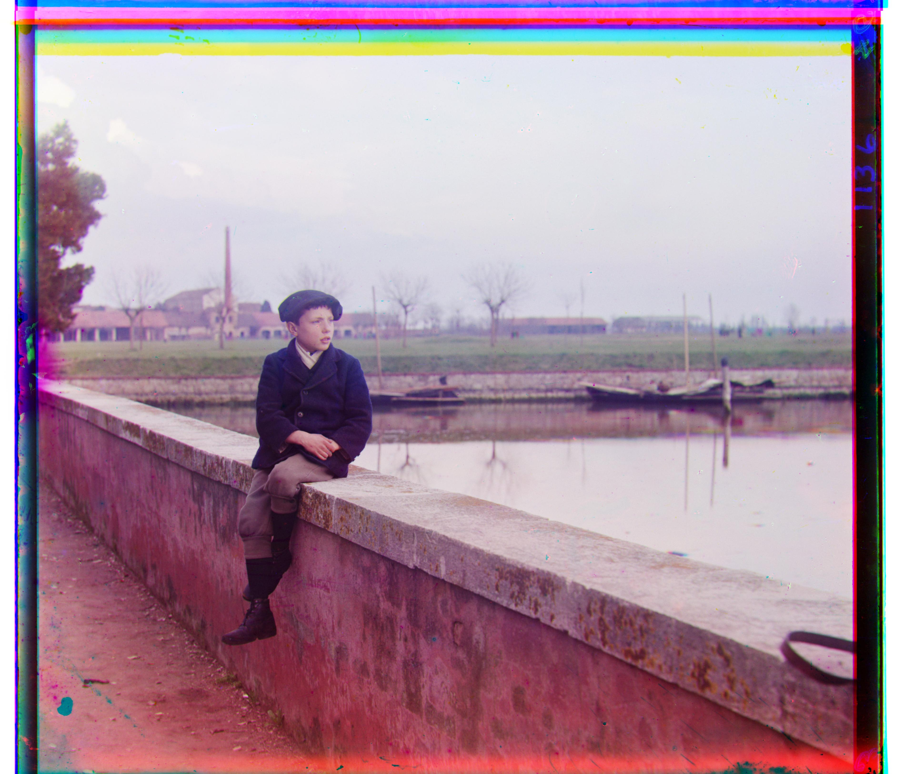
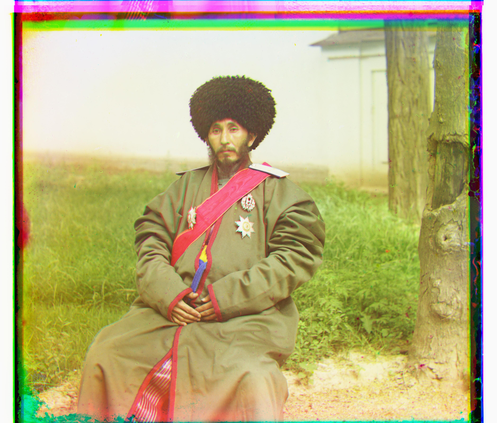

<script src="https://rawcdn.githack.com/oscarmorrison/md-page/master/md-page.js"></script>
<noscript>
<a href="../index.html">Main page</a>
# Project 1

## Description
The main goal of this project is to produce a color image based on three grayscale images (blue, green, and red channels).
The dataset for this project is a set of digitized Prokudin-Gorskii glass plate images.
The main challenge of this project is that color channels are not aligned with each other.

## Approach

To produce a color image, I needed to align all three channels. So I worked on an algorithm that finds the best shifts for green and red channels relatively to the blue channel.

### Simple alignment search algorithm
First I implemented a simple alignment algoritm with a grid search.
It tests different shifts (in the vertical and horizontal direction) and finds the shift that maximizes similarity between the channels (calculated as negative euclidean distance or Normalized Cross-Correlation (NCC)).
To avoid irrelevant pixels contributing to the similarity metric, I decided to ignore edges of the images when calculating the similarity metric, 10% from each side worked well.
I used range of shifts from -15 to 15 pixels for both directions to find the best shift.

This worked well for small size **.jpg** images:
<div style="display: flex; flex-direction: row;">
  <div style="display: flex; flex-direction: column;">
    
    <span>red offset: (12, 3), green offset: (5, 2)</span>
  </div>
  <div style="display: flex; flex-direction: column;">
    
    <span>red offset: (3, 2), green offset: (-3, 2)</span>
  </div>
  <div style="display: flex; flex-direction: column;">
    
    <span>red offset: (6, 3), green offset: (3, 3)</span>
  </div>
</div>

But not so good for large **.tiff** images:
<div style="display: flex; flex-direction: row;">
  <div style="display: flex; flex-direction: column;">
    
    <span>red offset: (15, -14), green offset: (15, 4)</span>
  </div>
  <div style="display: flex; flex-direction: column;">
    
    <span>red offset: (15, 15), green offset: (15, 15)</span>
  </div>
</div>

Due to larger scale of **.tif** images, the range from -15 to +15 pixels would likely not contain the best shift.
Also time to find the best shift for each **.tif** image was quite high: 46.17 seconds on average (0.50 seconds for **.jpg**). This would lead to huge processing time for larger shift ranges.

So a more sophisticated approach was needed.

### Pyramid alignment search algorithm
This recursive algorithm finds the best alignment for image channels based on the best alignment for the image of twice smaller scale.

The idea is that if for 0.5x image the best shift is A pixels horizontally and B pixels vertically, then for 1x image the best shift is likely to be close to A\*2 horizontally B\*2 pixels vertically.
We can keep offset search range for every scale relatively small since it would correspond to double the precision on higher scale.
So the more levels of scale we have, the more precise overall offset we can find with a small range of shifts for every scale.

I personally used range of shifts from -5 to 5 pixels for every scale. This would also reduce the time to process **.tiff** images significantly.
While for **simple alignment search** the search space would be 30x30, 6 level pyramind would result in search space of 10x10x6. Also take into account smaller processing time for downscaled images.
As a result, average time to process a **.tiff** image was 11.70 seconds, while for **.jpg** it was 0.28 seconds.

Below you can see the results of my best algorithm for all images (pyramid alignment search with NCC similarity metric).

## Results

# Colorization of the given dataset
<div style="display: flex; flex-direction: row; flex-wrap: wrap;">
  <div style="display: flex; flex-direction: column;">
    
    <span>red offset: (-329, -387), green offset: (-336, -388)</span>
  </div>
  <div style="display: flex; flex-direction: column;">
    
    <span>red offset: (58, -4), green offset: (25, 4)</span>
  </div>
  <div style="display: flex; flex-direction: column;">
    
    <span>Achieved with max_offset=5, depth=6</span>
    <span>red offset: (104, 56), green offset: (49, 24)</span>
  </div>
  <div style="display: flex; flex-direction: column;">
    
    <span>red offset: (124, 13), green offset: (60, 17)</span>
  </div>
  <div style="display: flex; flex-direction: column;">
    
    <span>red offset: (89, 23), green offset: (41, 17)</span>
  </div>
  <div style="display: flex; flex-direction: column;">
    
    <span>red offset: (117, 11), green offset: (55, 8)</span>
  </div>
  <div style="display: flex; flex-direction: column;">
    
    <span>red offset: (178, 13), green offset: (82, 11)</span>
  </div>
  <div style="display: flex; flex-direction: column;">
    
    <span>red offset: (-338, -389), green offset: (-344, -389)</span>
  </div>
  <div style="display: flex; flex-direction: column;">
    
    <span>red offset: (108, 36), green offset: (51, 27)</span>
  </div>
  <div style="display: flex; flex-direction: column;">
    
    <span>red offset: (140, -27), green offset: (33, -11)</span>
  </div>
  <div style="display: flex; flex-direction: column;">
    
    <span>red offset: (176, 37), green offset: (79, 29)</span>
  </div>
  <div style="display: flex; flex-direction: column;">
    
    <span>red offset: (112, 11), green offset: (53, 14)</span>
  </div>
  <div style="display: flex; flex-direction: column;">
    
    <span>red offset: (-335, -393), green offset: (-338, -393)</span>
  </div>
  <div style="display: flex; flex-direction: column;">
    
    <span>red offset: (87, 32), green offset: (43, 6)</span>
  </div>
</div>


# Extra colorized images 
<div style="display: flex; flex-direction: row;">
  <div style="display: flex; flex-direction: column;">
    
    <span>Image 00117 from Prokudin-Gorskii Collection</span>
    <span>red offset: (125, -13), green offset: (51, 0)</span>
  </div>
  <div style="display: flex; flex-direction: column;">
    
    <span>Image 00220 from Prokudin-Gorskii Collection</span>
    <span>red offset: (103, -11), green offset: (45, -13)</span>
  </div>
  <div style="display: flex; flex-direction: column;">
    
    <span>Image 10106 from Prokudin-Gorskii Collection</span>
    <span>red offset: (94, -7), green offset: (40, 9)</span>
  </div>
</div>

</noscript>